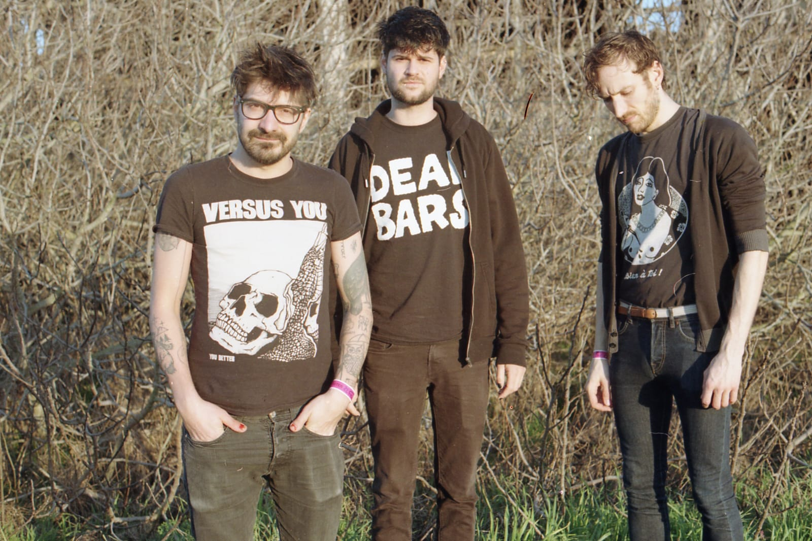
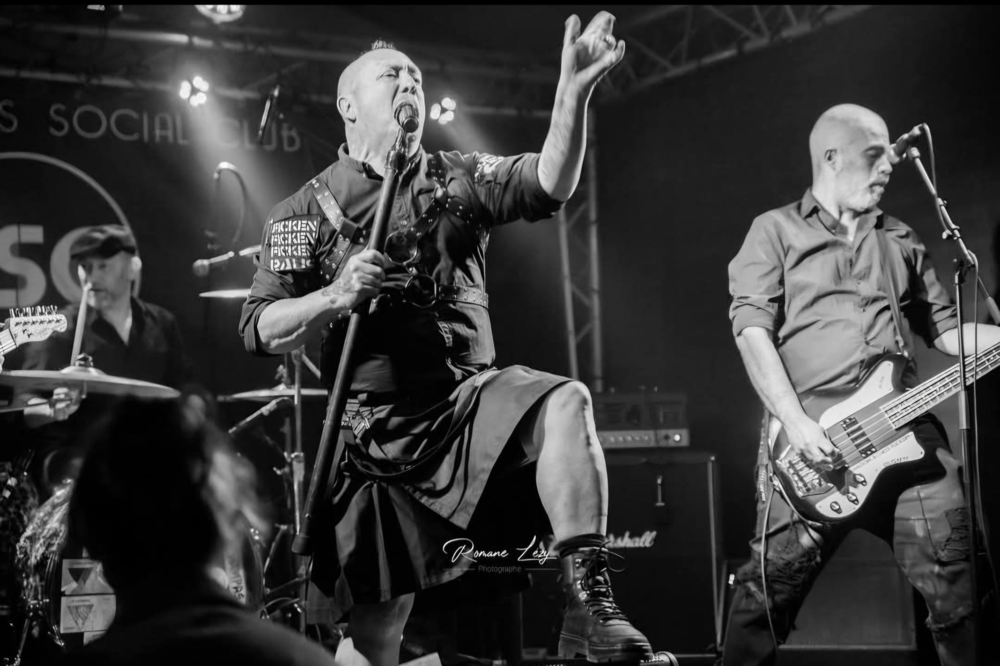
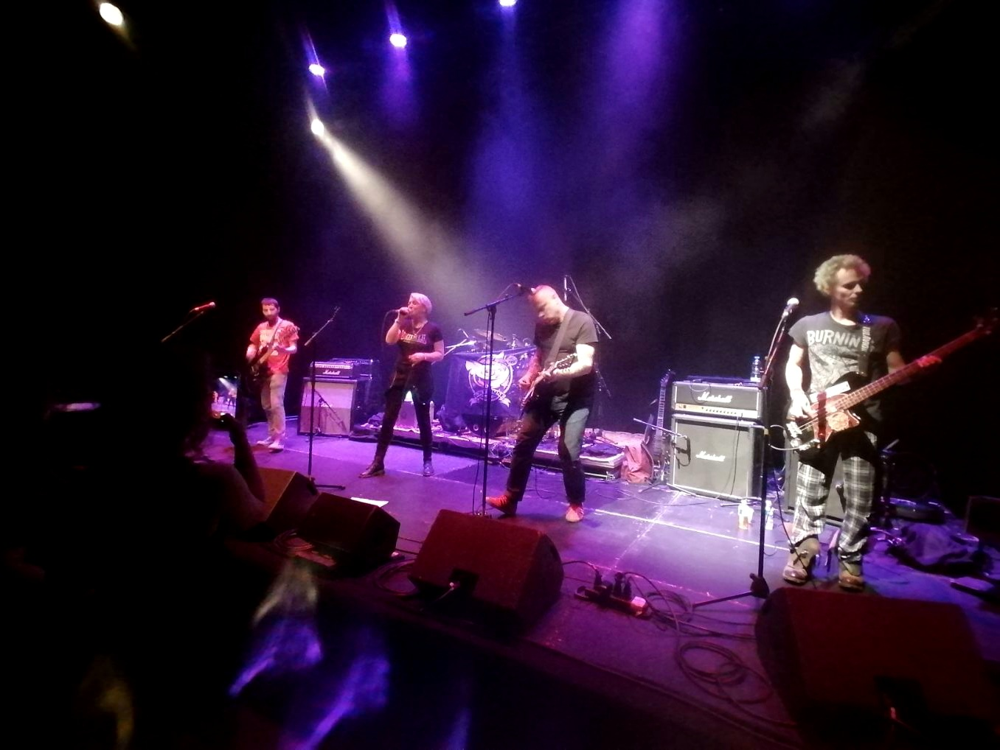
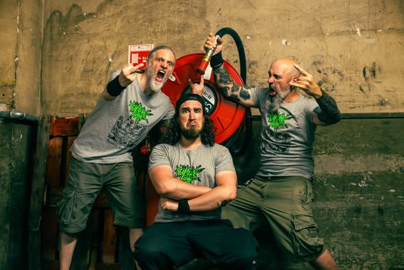
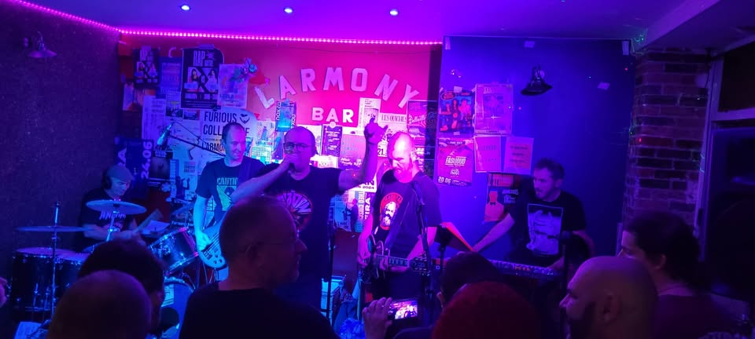
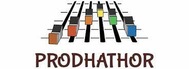
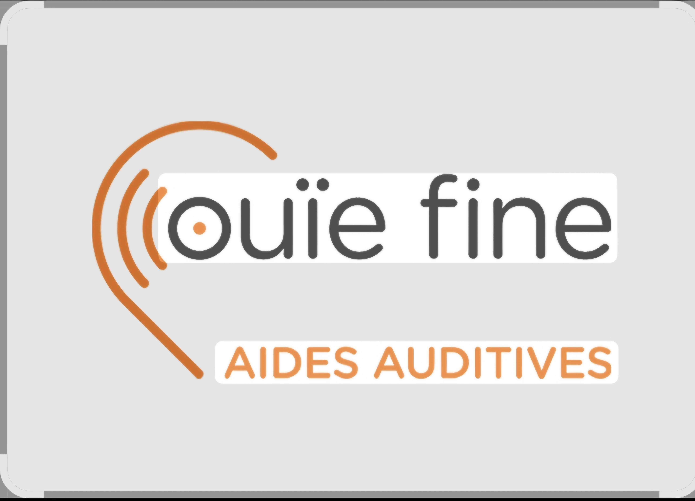

Samedi 4 Juillet 2026 • Montigny-sur-Loing (77)
Samedi 4 Juillet 2026 • Montigny-sur-Loing (77)
BIENVENUE À TOI revient pour sa 2ème édition !
Une soirée de pure énergie rock, punk et alternatif dans l'esprit. Pas de compromis, que du son brut et des artistes qui ont quelque chose à dire. Préparez vos pogos !
Vente sur place 12€ • gratuit pour -12 ans

GUERILLA POUBELLE ne le crie pas en vain : “Nulle part c’est chez moi” Plus de 1300 concerts, du minuscule bar associatif à la plus grande scène de festival, écumant toute la france comme le reste du monde (Europe, USA, Brésil, Japon, Canada, Thaïlande…) 20 ans de punk rock pessimiste et de DIY plein d’espoir portés par des prestations live explosives et des chansons pleines de slogans et de cynisme, d’humour acide passé au vitriol noir. Des prises de consciences... des brulots révoltés qui bousculent tout et qui martèlent la tète jusqu'à devenir une nourriture nécessaire et quotidienne pour l’esprit. Des hits punk rock jetés devant le tabernacle de la médiocrité de l’époque..
L’ENNUI - nouvel album Fer de lance de la scène DIY française GUERILLA POUBELLE reviennent avec leur nouvel album "L’ENNUI" 2 ans après leur dernier brûlot "LA NAUSÉE". Composé sur la route et enregistré à Montréal entre deux concerts, le trio s’est habillé d’un son énorme tout en restant fidèle à sa fraicheur habituelle. Le discours embrasse une radicalité encore plus vindicative : le verbe est cru et virulent, il écharpe à tout-va néo-libéralisme, mépris de classe, consumérisme, clichés de genre et autres boutures de cette société malade qui nous oppresse chaque jour un peu plus.

LE PUNK EST MORT ? VIVE LE PUNK !
Die Vräcks s'est formé quelques semaines avant le 1er confinement de 2020. Enfermez un punk pendant deux mois, il enregistre 14 chansons pour tromper l'ennui.... Et c'est ainsi que l'album KINKY FASTY TASTY est né.
En 2021, le groupe s'expose enfin à son public de prédilection. Le parti pris? Jouer Old School, quelque part entre les Pistols, les Heartbreakers et les Hives, avec des textes et un esprit déglingué à la Electric Six. Le résultat ? Ça sonne pas Français, ça sonne pas récent sans sonner poussiéreux, et ça fait sacrément du bien dans le paysage Punk Parisien. Succès immédiat, reconnaissance directe pour le groupe dont certains membres sont dans les tranchées de la scène Punk depuis des lustres.
DIE VRÄCKS - Girls & Punk affairs
En quelques mois, le groupe devient un des acteurs les plus actifs de la scène Punk en organisant des concerts et des festivals sur Paris. En un an et demi, plus de 140 groupes punk français et étranger ont joué sous leur bannière. Dans le même temps, Die Vräcks compléte sa discographie avec 3 EP de 3 titres chacun et donné près d'une quarantaine de concerts partout en France.
En 2023 le 2eme album, STCKY SPANKY AFFAIRS, enfonce clairement le clou et sort même en format vinyl avec la participation des labels MASS PROD, RONCE RECORS et MALOKA. Une grande fierté d'être ainsi reconnu. Le groupe creuse l'ecart avec 2 clips complètement déjantés qui ont beaucoup fait parler...et pas que chez les punks ! La preuve ? Le premier clip figure fièrement au classement des Meilleurs Clips de l'Année 2022 de la Grosse Radio. Et les 4 gus comptent bien planter d'autres clous en levant le pied sur l'organisation chronophage d'évènements punk pour se concentrer sur ce qu'ils font de mieux... Donner des concerts endiablés !
DIE VRÄCKS. PUNK AFFAIRS AT THE BEST!

Street punk venu des confins d’une campagne oubliée. Guitares saturées, boîte à rythmes et basse qui grondent, forment un cri de ralliement pour ceux qui refusent de se soumettre. Ekymose (nom d’origine) se forme en juin 2020 à Chaumont (52) avec la volonté de faire du punk-rock sans se fixer de limite. Au départ l’idée n’est pas de faire d’enregistrements et encore moins de concerts mais de se faire plaisir et de faire des morceaux tout simplement. Le groupe se forme autour de trois potes : Gath à la basse, Coco au chant et Manu à la guitare, accompagnés d’une boîte à rythme qui nous permet de répéter n’importe où, n’importe quand… sans gêner trop nos voisins.
Le groupe compose assez vite des morceaux chantés en français dans un esprit punk rock 77/80 et, au bout de quelques mois assez chaotiques, enregistre une première démo 5 titres chez Vincent, guitariste du groupe dijonnais punk mythique Heyoka. Cette démo sera tirée en mini cd carton à 1000 exemplaires et s’intitule « mauvaise étoile ». Cette démo se retrouve chroniquée dans de nombreux fanzines nationaux et passe dans plusieurs émissions de radio (Konstroy, radio Campus, Lille, Deviance, etc).
Ekymose attend une année pile pour faire un premier concert en plein confinement au coeur de la HauteMarne et ensuite la fête de la musique à Dijon. Puis s’enchaînent les premiers concerts avec notamment les premières parties de Collision (Nantes) à Paris (Cirque Electrique) puis Dijon (Les Tanneries) et des concerts privés.
Moins d’un an après (en novembre 2021), le groupe enregistre 6 titres qui constitueront le début du second disque auto-produit (1000 exemplaires en CD) intitulé « Instants perdus » avec comme pochette une photo du foyer des jeunes travailleurs de Chaumont. Les textes restent noirs, sombres et mélancoliques. Le groupe reprend les concerts et joue à Bar-surAube, Paris, Dijon, Nevers, Chaumont, vers Colombey les deux Eglises… dont notamment trois dates avec Kidnap (groupe mythique de Blois) et les berlinois de The Not Amused.
En janvier 2022, le groupe enregistre deux titres en hommage à un ami : Yann (qui aurait du faire la pochette du cd « instants perdus ») : « profession copain » et une reprise de Pierre Perret « Lily » avec Vincent (Heyoka) et Fred (Molodoi). Ces deux titres seront en bonus sur le cd.
Ekymose enregistre à 4 (Valentin a rejoint le groupe) un premier disque 4 titres qui restent sombres / Tristes dans le même esprit mais deviennent plus mélodiques et plus travaillés que les précédents. Il sort en mars 2023 sous le titre « Vestiges ». Le groupe joue à Grenoble, Reims, Chaumont, Dijon, au « Bar sur Aube Calling »,au festival de Sail sous Couzan…
En 2023/2024, les concerts s’accélèrent et le groupe joue à Grenoble, Dijon, Paris, Saint-Étienne… et tourne en Allemagne (Berlin, Leipzig…) et en Pologne durant l’été 2024. Fin 2023, le groupe enregistre le titre "Le lendemain du jour de la chance" avec en guests Manouche et Spirou de Molodoï et Vinvin d’Heyoka…. Qui sera présent ur la compile Zone Onze records.
Fin 2024, après quelques line-up, Jullien (guitariste des Revolvers rejoint le groupe). Le groupe change de nom pour devenir Ekymose Chnt.
Fin 2025, le groupe enregistre avec Vinvin et jeje de Mad Marx, 9 titres pour un album à sortir au printemps. Il sortira en vinyle et cd sur plusieurs labels comme Kamal Hystérik, général DStrike, maloka, Prisonniers du son, Le groupe a joué avec des groupes tel que : Ludwig von 88, Tagada Jones, Guérilla Poubelle, Claimed Choice, Cran, Intenable, Banane Métalik, Astroïd, Ramoneurs de Menhirs, Kidnap, Collision, Mad Marx, Kurt 137, K-Sos, Police on TV, Les Revolvers, Contingent Anonyme, The Not Amused, Turn Off et plein d’autres. Ekymose joue aussi dans la forêt en première partie de teuf techno, dans la rue, dans mon salon… Le groupe est présent sur la compilation 3 cd du Keupon voyageur, sur la compile du groupe Turn Off et la compilation du label Zone Onze records « Un long silence se fit entendre » avec PKRK, Mad Marx, Astroïd, Mollard, Police On TV et plein d’autres

Crossover de cultures punk, trash, rock'n'roll, hardcore. Leurs chansons courtes en français, sont anti-individualistes, anti-constructivistes ... Et la en lisant tu sens que ça fait chier de se décrire.
L'aventure commence en 2008 au fond d'une cave à la Ferté sous Jouarre (77) avec une guitare (Brutus), une basse (Nono) et une boite à rythme, en 2010 l'arrivée de Manpo la batterie accélère le processus de destruction auditive qui atteint grâce à l'arrivée de la voix agressive de JL, un premier palier suffisant pour un 1er concert le 8 mars 2012, le reste appartient désormais à l'Histoire...
Bref, après quelques changements de Line UP, et les départs de Brutus (guitare membre fondateur), Loïc (guitare, solos de l'espace et chœurs) puis JL (chant depuis 2011), aujourd'hui CULTURE LUTTE c'est:
2 démos (Par Thouze! ça va chier des bulles sur CD en coprod avec trauma social et Maculée conception seulement en numérique) sont sorties depuis un bon moment écoutables à peu près sur tous les supports.
Fin Août 2025 nos trois cavaliers de l'Apocalypse sortent enfin un format vinyle 10" Vert fluo en coprod avec trauma social, kick your asso, le keupon voyageur et prisonnier du son.

D’abord projet d’un homme seul, Perché sort deux albums en 2022 et 2024. Depuis le début 2025 c’est devenu un vrai groupe, qui après avoir assidûment répété se lance sur les scènes de France et d’ailleurs. Dans un style punk-rock / synth-punk, ils décrivent avec cynisme et lucidité toute l’horreur de ce monde ou expriment des désarrois plus intimes.
Le festival peut compter sur le soutien de ses partenaires qui rendent possible cette aventure.



Créée en octobre 2023, l'association "Bienvenue à Toi" porte les valeurs de solidarité, d'entraide et de contre-culture héritées de l'esprit punk. Nous organisons des concerts, spectacles et évènements musicaux, faisons la promotion des musiciens, artistes et groupes locaux.
Fondé en 1971, le Club Sportif et Culturel des Portugais de Fontainebleau (CSCPF), installé dans un écrin de verdure sur les hauts de Montigny, cultive depuis plus de 40 ans, succès sportifs, traditions Portugaises et convivialité qui en fait un club de foot pas comme les autres.